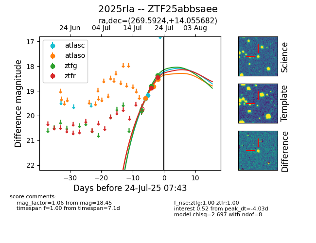

Target ZTF25abbsaee at 2025-07-24 07:43, see:
FINK: fink-portal.org/ZTF25abbsaee
Lasair: lasair-ztf.lsst.ac.uk/objects/ZTF25abbsaee
ALeRCE: alerce.online/object/ZTF25abbsaee
TNS: wis-tns.org/object/2025rla
YSE: ziggy.ucolick.org/yse/transient_detail/2025rla
alt names
ZTF25abbsaee (ztf,fink)
2025rla (tns,yse)
coordinates:
equatorial (ra, dec) = (269.5924,+14.05568)
galactic (l, b) = (39.8546,+17.99122)
photometry
last atlasc=18.45, atlaso=18.53, ztfg=18.37, ztfr=18.45
4 atlasc, 3 atlaso, 3 ztfg, 2 ztfr detections
